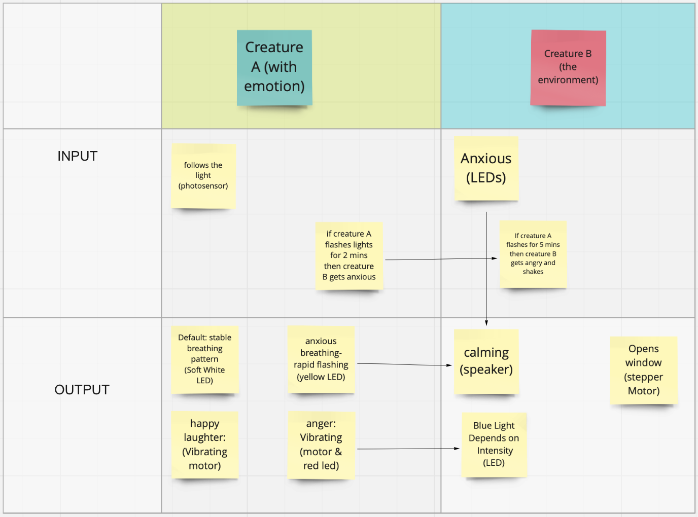
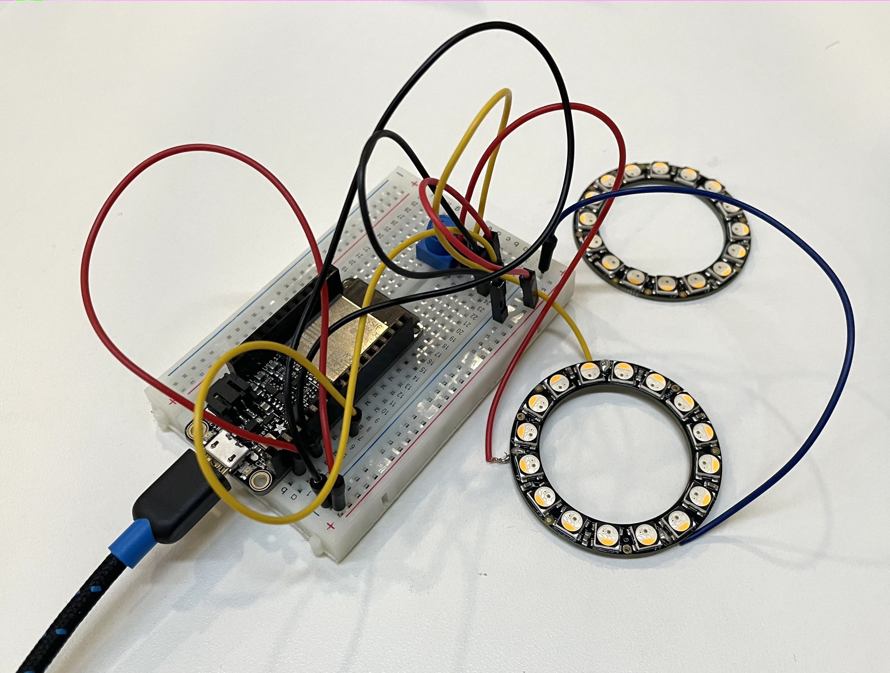
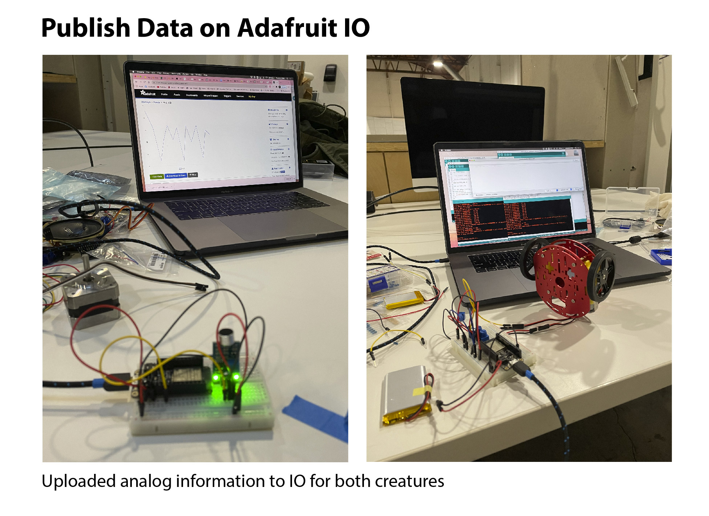

Creature A: The Marker

Creature B: The Eraser
Collaborated Project with Alan Amaya
“Do you have a technology-dependent creative project in your head that you want to build? Do you look at a particular kind of work by other interactive designers/artists and think "I wish I knew how to make that!" In this project, we're dropping you in at the deep end. We want you to propose a creative technology project, and we're going to try to help you build it. Or, more accurately, we're going to help you identify and kludge together a small critical piece of it.”
Our world contains two inter-related creatures: the Marker (creature A), and the Eraser (creature B). The Marker has legs made of charcoal, and the Eraser has sponges as its limbs. The Marker is driven by the light intensity in the environment that the Eraser keeps an eye on, and the Eraser is propelled by the audio level in the environment sensed by the Marker. Together, they can perceive the space they are in and react to it based on the information received from their partner.
Creature A: The Marker
Creature B: The Eraser
Creature A has emotions through different colors and intensity of light, which is a real-time response to the ambient sound emitted by creature B. In the meantime, creature B reads creature A’s emotions, and controls the ambient sound and the window accordingly.
We made the following table to map out the type of reactions each creature will have:
However, when our NeoPixel ring arrived, we noticed that it runs on 5V, different than the 3.3V ESP32 runs on. It was too late to wait for a level shifter to arrive, so we abandoned NeoPixel at all.
NeoPixel Rings
We also realized that in order to play ambient sound, we need an external music player (e.g. a phone) other than ESP32, which is against the idea of a self-sufficient creature. We decided to reduce the complexity in this plan, which led us to plan B.
Creature A has a mini sound sensor and runs on wheels. Creature B has a photocell and a stepper motor that spins something. The spinning of the stepper motor on creature B depends on the intensity of sound creature A captures. Meanwhile, the movement of creature A is determined by the intensity of light creature B senses.
with Stepper Motor
with Servo Motor
We had to switch from stepper to servo motor for Creature B because we only had one FeatherWing add-on which we need to drive Creature A’s two DC motors.
